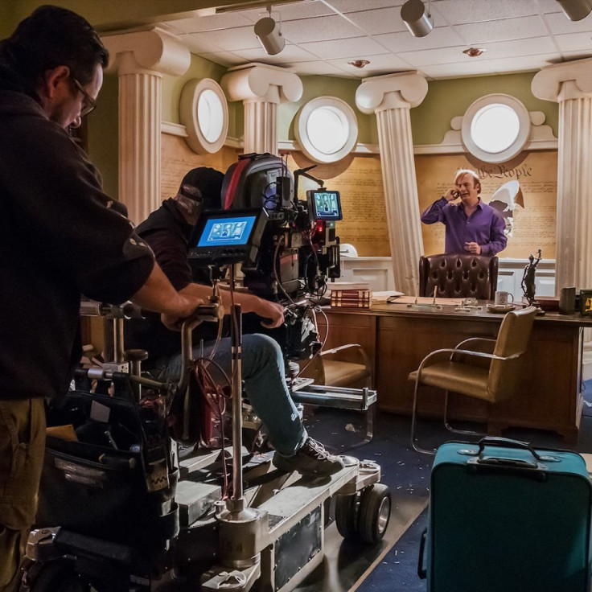

Sobre la Serie

Sinopsis
La serie sigue a Jimmy McGill, un abogado de pocos recursos, mientras lucha por construir su carrera legal mientras enfrenta tentaciones del mundo criminal. Con el tiempo, su evolución lo lleva a convertirse en Saul Goodman, un personaje clave en el mundo de "Breaking Bad".
Contexto
"Better Call Saul" combina drama legal con el thriller criminal, aderezado con humor negro. Funciona tanto como una precuela como una expansión del universo de "Breaking Bad", pero se sostiene por su propio mérito narrativo.

Locaciones y Estudios
La serie fue grabada principalmente en Albuquerque, Nuevo México, utilizando tanto locaciones reales como sets diseñados para recrear la ciudad y sus alrededores.
Creadores y Producción
- Creadores: Vince Gilligan y Peter Gould
- Productores Ejecutivos: Vince Gilligan, Peter Gould, Mark Johnson, Melissa Bernstein
- Guionistas Principales: Peter Gould, Vince Gilligan, entre otros destacados escritores que también trabajaron en "Breaking Bad".